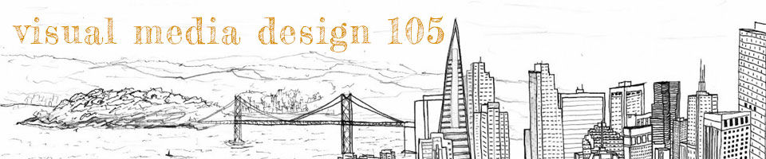
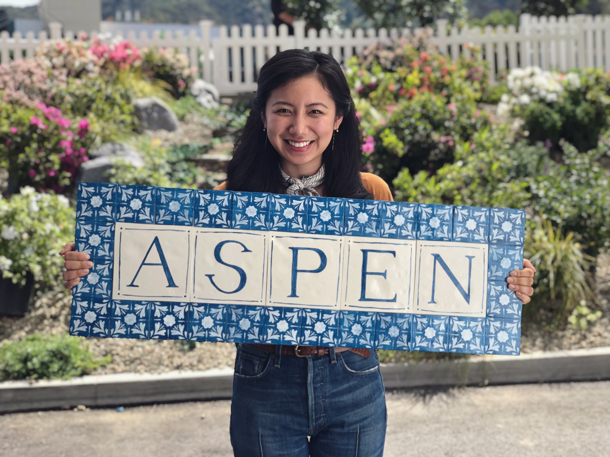

Welcome to my website for Visual Media Design 105! Each page will feature a project that I created as part of the class while learning to use programs in the Adobe Creative Cloud Suite: Photoshop, Illustrator, Animate, and InDesign. I decided to take Visual Media Design 105 this semester because I wanted a refresher in design skills. I graduated with a BA in Design from UC Davis in 2014 and have worked mainly as an interior designer and calligrapher since. I hope to continue taking design classes at CCSF to further develop my digital creative skills and to broaden my career opportunities in the future. I may decide to purse the Design Foundation Certificate available from the VMD department at CCSF.